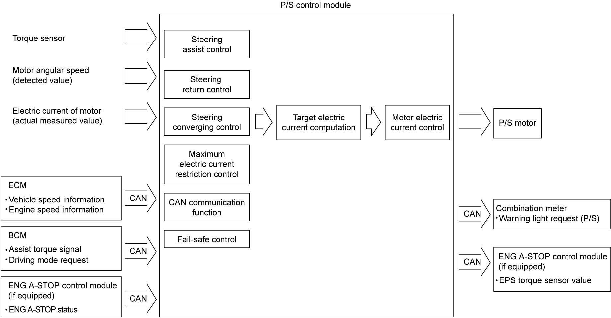

6C
| P/S Control Module Input / Output Diagram |

 "Expand image")
| Control item | Control function |
|---|---|
| Steering assist control | Electric current value to assist steering is determined based on steering torque information from torque sensor and vehicle speed information through CAN communication. This is basic control of P/S system. |
| Steering return control | Friction in steering system affects return feeling of the steering wheel especially at low speed of the vehicle. The compensation current assists the motor rotation in steering return direction and improves return feeling of the steering wheel. |
| Steering converging control | At high speed running, steering damping performance becomes worse. Therefore, the compensation current is supplied for improvement of vehicle high speed stability. |
| Maximum electric current restriction control | If the steering wheel is kept at fully turned position with engine running, maximum current for full steering assist is continuously being supplied to P/S motor causing the motor and P/S control module to overheat. To prevent this, the control module reduces the current gradually when the maximum current is supplied for specified time continuously. |
| Fail-safe control | P/S control module is equipped with fail-safe relay in its power supply circuit. When the system is operating normally, the relay is “ON” and the control module can supply electric power to P/S motor. However, once any malfunction is detected by self-diagnosis in P/S control system, the relay is set to “OFF” and the power supply is cut off to stop the power assist system. |